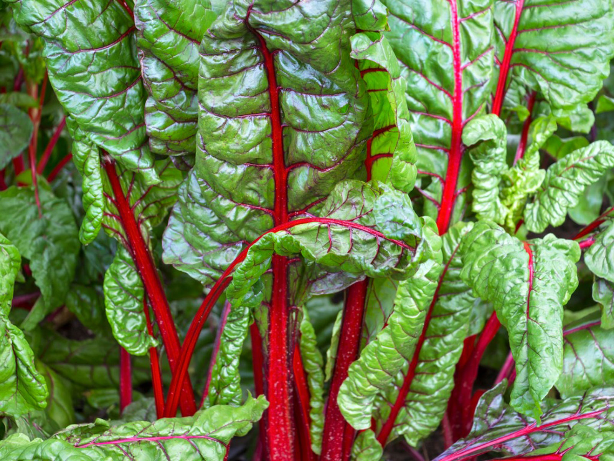

Spring
Planting Guide

Summer
Planting Guide

Fall
Planting Guide

Basil

Beans

Beets

Bokchoy

Broccoli

Brussel
Sprout
Cabbage

Carrots

Cauliflower
Celery

Chard
Cilantro

Corn

Cucumber

Eggplant

Fava beans

Garlic

Kale

Leek

Lettuce

Melon

Mustard
Okra

Onion

Parsley

Peas

Peppers
Potatoes

Pumpkin

Raddish

Spinach

Squash

Watermelon

Tomatoes

Turnip
Zucchini